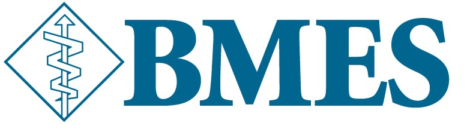

|
|
Interesting Professional Society- Biomedical Engineering Society

The Biomedical Engineering Society (BMES) is the professional society
for biomedical engineering and bioengineering. In fact, there
is a BMES chapter here at Pitt that students can join. BMES serves as the lead society and professional home
for biomedical engineering and bioengineering.
- 1. Who are the members of this society?
- BMES has over 7,000 members and is growing.
- All biomedical engineers are welcome to join BMES. Members range from engineering students to university faculty to employed engineers.
- 2. Why does this association exist?
- Along with being able to attend the annual BMES conference and recieve publications, Other membership benefits include the opportunity to receive awards and recognition, voting rights, and the opportunity to serve on leadership committees
and other global initiatives in the Society to advance the field of biomedical engineering.
- BMES holds an annual conference where members can listen to scientific presentations, attend a career fair, and network with other BMES members and with recruiters.
- Members receive a subscription to the quarterly E-Bulletin, our member online newsletter and a subscription to the Annals of Biomedical Engineering (ABME). Members can also request to receive Cellular and Molecular Bioengineering (CMBE) and Cardiovascular
Engineering and Technology (CVET). .
- 3. Becoming a member of BMES
- BMES is a useful organization that helps biomedical engineers continuously learn, network, and advance the field of biomedical engineering.
- As well as having the opportunity to network with other biomedical engineers and remain at the top of their field, BMES members also receive online access to the BMES Career Connections job board listing career opportunities and
internships.
- Learn more about BMES.
|